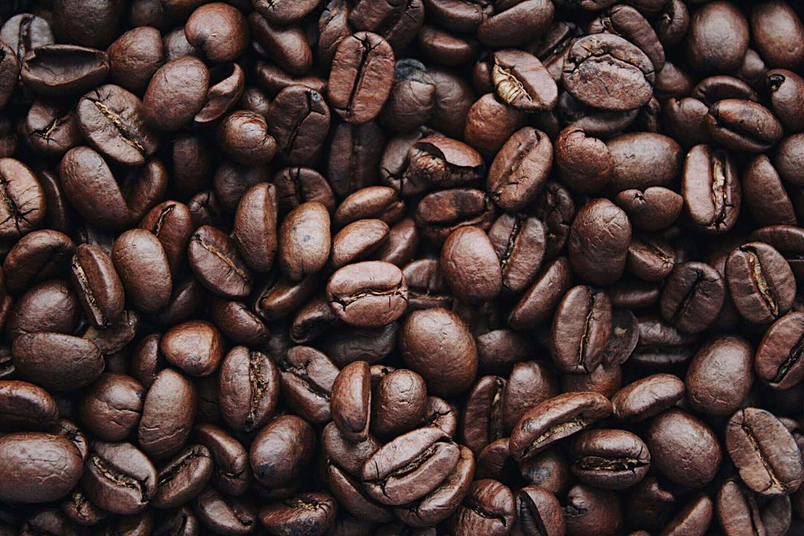

Coffee Varieties
Coffee is a diverse beverage with unique aromas and flavors.
Arabica has a delicate flavor with floral and citrus notes.
Robusta is stronger, more bitter, and rich in caffeine.
Liberica is rare, with a smoky and fruity taste.
Coffee is a diverse beverage with unique aromas and flavors.
Arabica has a delicate flavor with floral and citrus notes.
Robusta is stronger, more bitter, and rich in caffeine.
Liberica is rare, with a smoky and fruity taste.

Coffee has a fascinating history that dates back hundreds of years.
Ethiopian legend: A shepherd discovered coffee after noticing his goats became energetic.
Global spread: Coffee reached Europe in the 17th century.
Economic impact: It became a major global commodity.
Coffee is more than just an energizing drink.
1. Superfood: Rich in antioxidants.
2. Boosts performance: Improves energy.
3. Many types: Espresso, cold brew, etc.
4. Was banned: In some historical periods.
5. Burns fat: Stimulates metabolism.